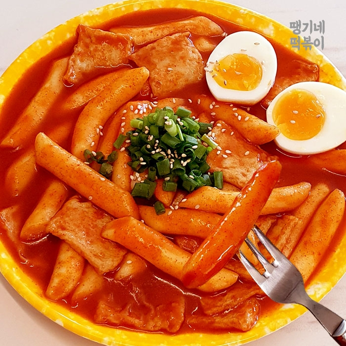

sung's deokbokki

Description
Ingredient
- Ddoek
- ggochujang
- water 12 cups
- anchobi
- garlic
- pepper
- soy sauce
- salt
- nunu
- chilli powder
steps
- water in the pot
- boil water
- cut veggies
- soak ddoek in cold water
- put veggies into boiling water
- put ggochujang into water
- put Ddeok into pot
- put nunu into pot
- put everything together mix until nunu say love you